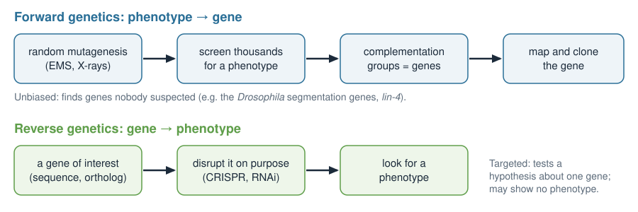
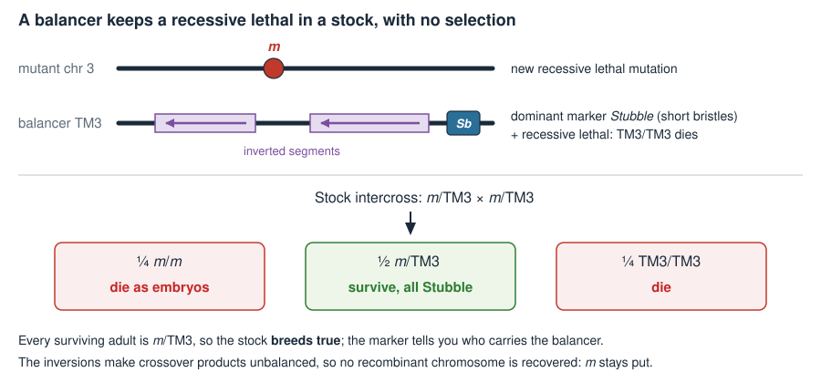
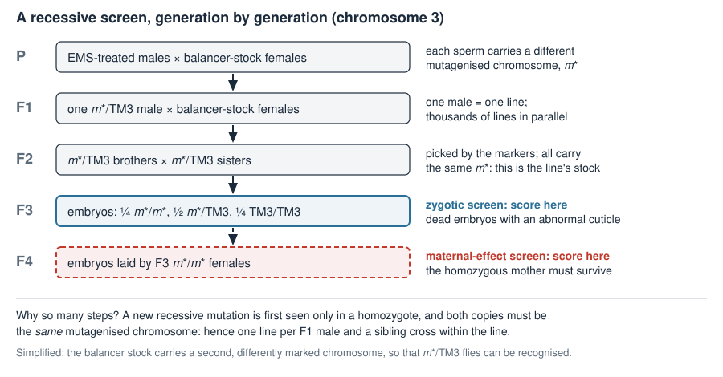
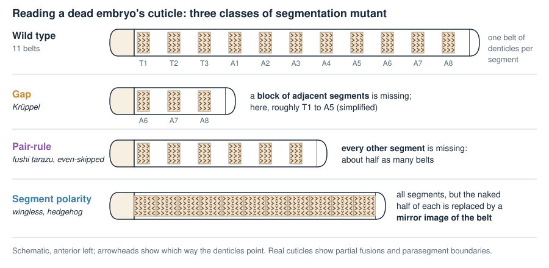
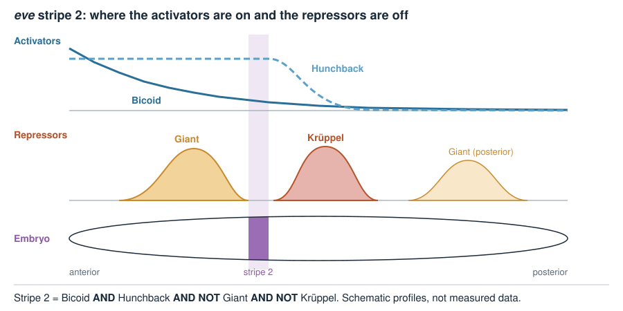
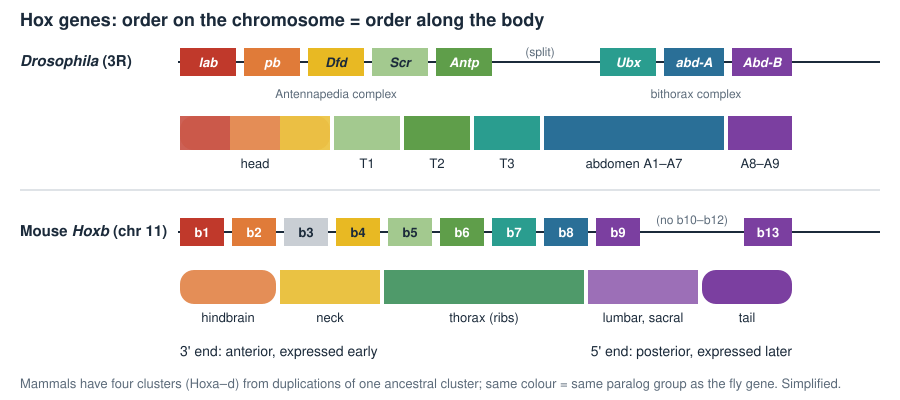
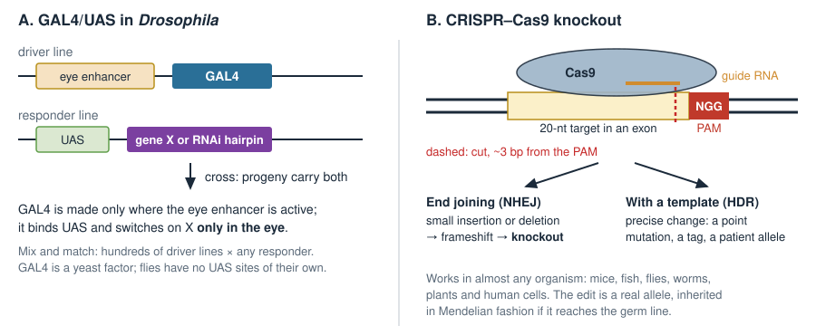

Part 6: Gene regulation & development. Genetic analysis of how an embryo is built
Basic and molecular genetics (5MO104)
About this lecture
How does one fertilised egg build a body with a head at one end and a tail at the other? Most of what we know came from mutant screens in a few model organisms, and from the surprise that the genes found in flies and worms have counterparts in humans.
Forward vs reverse genetics; the main model organisms and their databases.
How a screen works: balancers, the generations of a recessive screen, maternal-effect genes and reciprocal crosses.
The Drosophila segmentation hierarchy: reading mutant cuticles; the eve stripe 2 enhancer as a logic gate.
Hox genes: which way a segment is transformed, dominance, colinearity.
Ordering genes by epistasis; the C. elegans cell lineage and cell death.
Gene dose: haploinsufficiency plus recessive lethality (Brachyury, PAX6).
Genetic tools: GAL4/UAS, CRISPR–Cas9, from a mosaic founder to a homozygous mutant.
Book: Hartwell, Genetics: From Genes to Genomes, the chapter on the genetic analysis of development.
Why model organisms?
Organism
Generation
Genome (approx.)
Strengths
Database
Budding yeast, S. cerevisiae
~2 h
12 Mb, ~6000 genes
haploid and diploid; tetrads; cell cycle
SGD
Worm, C. elegans
~3.5 days
100 Mb, ~20 000 genes
invariant cell lineage; transparent; RNAi by feeding
WormBase
Fruit fly, D. melanogaster
~10 days
140 Mb, ~14 000 genes
huge mutant collections; balancers; GAL4/UAS
FlyBase
Zebrafish, D. rerio
~3 months
1.4 Gb, ~26 000 genes
transparent embryos; vertebrate
ZFIN
Mouse, M. musculus
~10 weeks
2.7 Gb, ~22 000 genes
mammal; knockouts; disease models
MGI
Thale cress, A. thaliana
~6 weeks
135 Mb, ~27 000 genes
plant development; selfing
TAIR
The Alliance of Genome Resources brings SGD, WormBase, FlyBase, ZFIN, MGI, RGD and Xenbase together, with orthology between them.
Forward and reverse genetics

Forward: mutagenise, screen, find the genes. Unbiased, but you only find genes whose loss gives a visible, specific phenotype.
Reverse: start from a gene (often an ortholog of a gene known elsewhere), knock it out, and look. Targeted, but genes can be redundant and show no phenotype.
The Heidelberg screen
Christiane Nüsslein-Volhard and Eric Wieschaus (1980) looked for every gene needed to make the pattern of the Drosophila larva.
Mutagen: EMS on males; each sperm carries different random point mutations.
Readout: embryos that die with an abnormal larval cuticle. The cuticle has one belt of small hooks (denticles) per segment, so pattern defects are easy to see.
Sorting: mutations with similar phenotypes are tested against each other and sorted into complementation groups (genes), as in the Mutation unit.
Saturation: most genes were hit several times, so few genes of this kind were left to find.
Result: about 15 genes for segment number and polarity, in three classes: gap, pair-rule and segment polarity. (Nobel Prize 1995, with Ed Lewis.)
The next two slides show the genetic trick that made it possible: the balancer.
Balancers: keeping a lethal mutation without selection

A balancer has three properties: several inversions (so recombinants are not recovered), a dominant marker (so you can see who carries it), and a recessive lethal (so balancer homozygotes die).
A recessive screen, generation by generation

Rule of thumb: you see a recessive zygotic phenotype two generations after the mutagenised male (F3); a maternal-effect phenotype one generation later, in the embryos of homozygous mothers.
Maternal-effect genes
The anterior–posterior axis is set up before the embryo’s own genes are switched on, by mRNAs the mother puts into the egg. bicoid mRNA sits at the anterior pole; its protein forms a gradient that tells nuclei how far they are from the head.
Rule: the embryo’s phenotype = the mother’s genotype. The embryo’s own genotype does not matter.
Maternal effect over three generations: snail coiling
In the pond snail Lymnaea, the direction of shell coiling is set by one gene: dextral (D, right-handed) is dominant over sinistral (d). It acts as a maternal effect (Boycott & Diver; Sturtevant, 1923). The snails are hermaphrodites and can self-fertilise.
Generation
Genotypes
Coiling
Why
P
dd ♀ × DD ♂
(sinistral × dextral)
F1
all Dd
all sinistral
their mother was dd
F2 (F1 selfed)
1 DD : 2 Dd : 1 dd
all dextral
their mother (F1) was Dd
F3 (each F2 selfed)
broods from each F2 parent
¾ of broods dextral, ¼ sinistral
each brood follows its own mother: DD, Dd → dextral; dd → sinistral
The genotype ratio is Mendelian (1 : 2 : 1 in F2); the phenotype ratio appears one generation late, counted as whole broods.
Reciprocal P cross, DD ♀ × dd ♂: F1 all Dd and dextral. Same F1 genotype, opposite phenotype.
Four ways reciprocal crosses can differ
Mendel’s reciprocal crosses gave the same result: for his genes, it did not matter which parent gave which allele. When reciprocal crosses differ, ask what decides the offspring’s phenotype:
Mechanism
Unit
What decides
Diagnostic pattern
X linkage
Part 2
the offspring’s own genotype, and its sex
ratios differ between sons and daughters; sons get their X from the mother
Organelle inheritance
Part 5
the mother’s cytoplasm (mtDNA, chloroplasts)
all offspring of an affected mother, every generation; never through fathers
Imprinting
Eukaryotic regulation
which parent gave the active allele
autosomal 1 : 1 segregation, but expressed only when inherited from one parent
Maternal effect
this unit
the mother’s nuclear genotype
offspring look like the mother’s genotype; Mendelian ratios appear one generation late
The segmentation hierarchy
Each tier is a set of transcription factors (or signals) that regulate the next. The pattern gets finer at every step: one gradient → a few broad domains → 7 stripes → 14 stripes → 14 segments, each with its own identity.
Reading a mutant cuticle

Ask two questions: how many belts are left, and which are missing (a block, every other one, or part of each)? The answer names the class, and the class tells you the scale at which the gene acts.
eve stripe 2: an enhancer as a logic gate

The even-skipped stripe 2 enhancer (about 500 bp) has binding sites for the activators Bicoid and Hunchback and the repressors Giant and Krüppel. Each of the seven eve stripes is driven by its own enhancer (some drive two).
Experiments that define an enhancer
Delete the stripe 2 enhancer: stripe 2 disappears; the other six stay.
Reporter: put the enhancer in front of a minimal promoter and lacZ: β-galactosidase is made in stripe 2 only.
Remove a repressor: in a giant mutant embryo, stripe 2 spreads anteriorly, into the region where Giant would be. Mutating a repressor’s binding sites in the reporter has the same kind of effect.
Rule: removing a repressor lets the stripe grow towards where that repressor was.
Cis/trans: the enhancer is a DNA site, so a deletion affects only the eve copy on its own chromosome. The four factors are proteins and act on both copies.
Left: Eve protein (red) in seven stripes; a reporter driven by one enhancer (green) marks only some of them. Right: detail of the eve stripes.
Hox genes: homeotic mutants
Homeotic mutations turn one body part into another:
Antennapedia (dominant gain of function): Antp is switched on in the head, and legs grow where the antennae should be.
Ultrabithorax (loss of function, combined alleles in the bithorax complex): the third thoracic segment develops like the second: a fly with four wings.
Ed Lewis showed that the genes of the bithorax complex lie in the same order on the chromosome as the segments they control. All Hox genes share a 180-bp homeobox, encoding a DNA-binding homeodomain: they are transcription factors.
An Antennapedia fly: a pair of legs in place of the antennae.
Which way does a segment turn?
Each segment’s identity is set by the most posterior Hox gene active in it. That gives one rule for both kinds of mutation:
Allele
What goes wrong
Transformation
Dominance
Ubx loss (bx, pbx)
no Ubx in T3
T3 → T2: haltere → wing (more anterior)
recessive
Contrabithorax (Ubx gain)
Ubx made in T2 too
T2 → T3: wing → haltere (more posterior)
dominant
Antp gain
Antp made in the head
antenna → leg (more posterior)
dominant
Antp loss (in clones)
no Antp in thoracic cells
leg → antenna (more anterior)
recessive
Loss of a Hox gene → the segment takes a more anterior identity. Ectopic gain → more posterior.
Gain alleles are usually dominant: one allele that makes a normal protein in the wrong place is enough. Loss alleles are usually recessive: one working copy is enough where the gene should be on.
Colinearity, from flies to mice

The order of Hox genes on the chromosome matches the order of the body regions where they act (colinearity): lab at one end is most anterior, Abd-B at the other end most posterior. Mammals have four Hox clusters (Hoxa–d, 39 genes) made by duplication of one ancestral cluster. Knocking out mouse Hox genes gives homeotic changes in vertebrae, e.g. a cervical vertebra that looks like a thoracic one (with ribs).
Ordering genes in a pathway by epistasis
Method (as in Extensions to Mendel): find two mutants with opposite phenotypes, make the double mutant, and see which phenotype it shows. The double mutant looks like the downstream gene.
Worked example: vulva induction in C. elegans. A signal from one cell tells three skin cells to form the vulva.
Genotype
Phenotype
wild type
one vulva
let-23 loss of function (receptor, EGFR-like)
vulvaless
let-60 gain of function (Ras, stuck “on”)
multivulva (extra vulvae)
let-23(lf); let-60(gf)
multivulva
The double looks like let-60: Ras acts downstream of the receptor. An active Ras does not need the receptor.
C. elegans: a body built cell by cell
The adult hermaphrodite has 959 somatic nuclei. John Sulston traced every division from the zygote: the cell lineage is invariant, the same in every worm.
So a mutant phenotype can be read cell by cell: which cell divided wrongly, or took the wrong fate?
Heterochronic genes (lin-4, lin-14, let-7) decide when in the lineage each fate happens (last unit).
Laser ablation of single cells shows which cells signal to their neighbours.
An adult hermaphrodite, about 1 mm long, in DIC microscopy: transparent, so every nucleus can be followed.
Programmed cell death: the ced genes
During development, 131 of the cells made in the hermaphrodite die by programmed cell death. Mutant screens found the genes:
Mutant
Phenotype
ced-3 loss of function
the 131 cells survive
ced-4 loss of function
the 131 cells survive
ced-9 loss of function
extra cells die, embryo dies
ced-3 and ced-4 are needed for death; ced-9protects cells: opposite phenotypes, so double mutants can order them (exercise).
Human counterparts: caspases (ced-3), APAF1 (ced-4), BCL2 (ced-9). Human BCL2 can replace ced-9 in transgenic worms. (Nobel Prize 2002: Brenner, Horvitz, Sulston.)
Dose: dominant phenotype, recessive lethal
Some developmental genes are haploinsufficient: one working copy is not enough. Their loss-of-function alleles then have two phenotypes, one in heterozygotes and one in homozygotes.
Worked example: mouse Brachyury (T), a transcription factor needed for posterior mesoderm.
Genotype
Phenotype
+/+
normal tail
T/+
short tail (dominant, visible)
T/T
dies in mid-gestation: no notochord, no posterior body (recessive lethal)
T/+ × T/+ → ¼ +/+ : ½ T/+ : ¼ T/T. Among the live-born pups: 1 normal : 2 short-tailed. The missing quarter is the 2 : 1 signature of a recessive lethal, as for the yellow mouse in Extensions to Mendel.
eyeless and PAX6: one master gene for eyes?
eyeless (Drosophila): flies lacking it have small or no eyes. Small eye (mouse, Pax6) and aniridia (human, PAX6) are caused by mutations in orthologous genes: in mice and humans one mutant copy is enough to give a phenotype (haploinsufficiency), and loss of both copies is far more severe.
Expressing eyeless in other imaginal discs gives ectopic eyes on legs, wings and antennae (Gehring lab, 1995). Mouse Pax6 does the same in flies.
Flies, mice and humans built their eyes very differently, yet use a related transcription factor at the top of the eye programme: deep homology.
Flies actually have twoPAX6 genes, eyeless and twin of eyeless; which one counts as “the” ortholog depends on the method. You will see this in Find it and in R.
Genetic tools: GAL4/UAS and CRISPR

Transgenics: put new DNA into the germ line (P elements in flies, injection in worms and mice).
GAL4/UAS: switch on any transgene (or an RNAi hairpin) in any tissue, by crossing a driver line to a responder line. The ectopic eyes were made this way.
CRISPR–Cas9: cut a chosen site; error-prone repair gives a knockout; repair with a template gives a precise edit.
From a CRISPR founder to a homozygous mutant
The injected animal (F0, the founder) is usually a mosaic: Cas9 cuts after the embryo has started dividing, so different cells carry different edits, or none.
F0 × wild type. Each F1 offspring gets one chromosome from the founder’s germ line: it is a heterozygote for one defined allele (or wild type).
Genotype the F1 by sequencing the target site. Keep carriers of a useful allele, e.g. a frameshift, and discard in-frame changes.
F1 × F1 carriers of the same allele → F2: Mendel’s monohybrid cross, 1 : 2 : 1.
The phenotype of a knockout is studied in homozygotes of one defined allele, never in the mosaic founder.
Orthologs across model organisms
Orthologs are genes in different species that descend from one gene in their last common ancestor; paralogs arise by duplication within a lineage.
Human
Mouse
Zebrafish
Fly
Worm
Yeast
PAX6
Pax6
pax6a, pax6b
toy (and ey)
vab-3
—
CDK1
Cdk1
cdk1
Cdk1
cdk-1
CDC28
Developmental signalling and patterning genes go back to the animal ancestor; yeast, a single-celled fungus, has none of them.
Core cell machinery (cell cycle, cytoskeleton) is shared with yeast.
Zebrafish often have two copies, from a genome duplication in the ancestor of teleost fish.
Common mistakes
“A bcd/bcd fly must look abnormal.” No: her own mother was bcd/+ and gave her egg bicoid mRNA. Only her embryos are abnormal.
“Maternal effect is the same as mitochondrial inheritance.” No: a maternal-effect gene is nuclear and segregates normally; its effect is just delayed by one generation.
“The epistatic gene acts first.” No: with opposite single-mutant phenotypes, the double mutant shows the downstream gene.
“Dominant means gain of function.” No: haploinsufficient losses (PAX6, Brachyury) are dominant too. And trans-acting does not mean dominant.
“A Hox loss of function makes extra structures.” Usually it makes a segment more anterior; extra structures (four wings) come from one segment copying another.
“Score the CRISPR founder.” No: it is a mosaic; score homozygotes of one allele, two generations later.
Check yourself
A sinistral Lymnaea snail is found in a pond. What can you say for certain about its mother’s genotype? About its own?
A fly stock is m/TM3. You stop checking it for 20 generations. Is m still there? How do you know without testing?
You want to order two genes in a pathway. Mutant a and mutant b both lack a structure. Can the double mutant tell you which gene acts first? What would you look for instead?
In a heterozygote for a deletion of an enhancer of gene G, is G still expressed in that enhancer’s tissue? And in a heterozygote for a loss-of-function allele of the transcription factor that binds the enhancer?
GAL4/UAS, CRISPR; mosaic F0 → F1 heterozygotes → F2 homozygotes
Orthologs
inferred by algorithms; patterning genes absent from yeast; fish duplicates
Where this leads
Part 7: Cancer genetics. Many developmental genes (SHH, WNT, NOTCH, HMGA2, BCL2) and the receptor–Ras pathway return as oncogenes and tumour suppressors when they are switched on in the wrong place or time.
Part 7: Complex traits. Most human variation in shape and size comes from regulatory variants in developmental genes.
.jpg){kind=link}